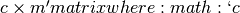
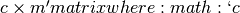
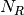

RoadRunner API Reference¶
This is some text that references roadrunner
The method, RoadRunner.test() does something.
The RoadRunner SBML Simulation Engine, (c) 2009-2013 Herbert Sauro, Andy Somogyi and Totte Karlson
- class roadrunner.RoadRunner¶
- The main RoadRunner class.
- RoadRunner.test()¶
this method does some stuff
- RoadRunner.__init__(compiler='', tempDir='', supportCodeDir='')¶
All three of the RoadRunner options default to the empty string, in this case, the default values are used.
Parameters: - compiler – if LLVM build is enabled, the compiler defaults to LLVM.
- tempDir – (string) typically ignored, only used by the old C RoadRunner.
- supportCodeDir – typically ignored, only used by the old C RoadRunner
and some more stuff.
- RoadRunner.computeSteadyStateValue(*args)¶
Returns a vector of steady state values for the floating species. The order of species in the vector is indicated by the order of species Ids in a call to getFloatingSpeciesIds()
- RoadRunner.getCC(variable, parameter)¶
Returns a scaled control coefficient with respect to a parameter. For example:
rr.getCC ('J1', 'Vmax') rr.getCC ('S1', 'Xo') rr.getCC ('S2', 'Km')
The first returns a flux control coefficient with respect to flux J1. The second and third return concentration control coefficients with respect to speies S1 and S2.
Parameters: - variable – The id of a dependent variable of the coefficient, for example a flux or species concentration.
- parameter – The id of the independent parameter, for example a kinetic constant or boundary species
Returns: the value of the control coefficeint returned to the caller.
Return type: double
- RoadRunner.getCompiler()¶
Return the compiler used to build the ExecutableModel.
- RoadRunner.getConfigurationXML()¶
recurse through all of the child configurable objects that this class ownes and build an assemble all of thier configuration parameters into a single xml document which is returned as a string.
The value of this result depends on what child objects are presently loaded.
- RoadRunner.getConservationAnalysis()¶
is conservation analysis enabled. This is set NEEDS MORE
- RoadRunner.getConservationMatrix()¶
Returns a conservation matrix
 which is a  is the number of conservation laws and
which is a  is the number of conservation laws and  the number of species.
the number of species.
- static RoadRunner.getCopyright()¶
Returns the copyright string
- RoadRunner.getEE(reactionId, parameterId, steadyState=True)¶
Retireve a single elasticity coefficient. For example:
x = rr.getEE (‘J1’, ‘Vmax’)
Parameters: - variable (str) – The dependent variable of the coefficient, for example a flux or species concentration.
- parameter (str) – The independent parameter, for example a kinetic constant or boundary species
- steadyState (Boolean) – should the steady state value be computed.
- RoadRunner.getEigenvalueIds()¶
returns a list of floating species ids with thier names prefixed with ‘eigen_‘. For example, if the model contained the floating species ‘S1’ and ‘S2’, this would return a list containing [‘eigen_S1’, ‘eigen_S2’].
- RoadRunner.getEigenvalues(m)¶
Returns eigenvalues, first column real part, second column imaginary part.
Return type: numpy.ndarray
- static RoadRunner.getExtendedVersionInfo()¶
getVersion plus info about dependent libs versions.
- RoadRunner.getFloatingSpeciesAmountIds()¶
Returns a list of the floating species Ids, but with theIids surrounded by square brackets, i.e. ‘S1’ -> ‘[S1]’
- RoadRunner.getFullJacobian()¶
Compute the full Jacobian at the current operating point.
This is the Jacobian of ONLY the floating species.
- RoadRunner.getFullyReorderedStoichiometryMatrix()¶
Returns the full reordered stoichiometry matrix for the currently loaded model. The rows will coresponds to the order of species in the call to getFloatinSpeciesIds(), the colunms will corresponds to the order of reactions in the call to getReactionIds().
- RoadRunner.getInfo()¶
return info about the current state of the object
Return type: str
- RoadRunner.getInstanceCount()¶
Number of currently running RoadRunner instances.
- RoadRunner.getInstanceID()¶
When there are multiple instances of RoadRunner, this is the instance id.
- RoadRunner.getIntegrator()¶
get the integrator which is currently being used to time evolve the system.
- RoadRunner.getL0Matrix()¶
Returns the L0 matrix for the current model. The L0 matrix is an (m-r) by r matrix that expresses the dependent reaction rates in terms of the indepdent rates. m is the number of floating species and r is the rank of the stoichiometry matrix.
Return type: numpy.ndarray
- RoadRunner.getLinkMatrix()¶
Returns the full link matrix, L for the current model. The Link matrix is an m by r matrix where m is the number of floating species and r the rank of the stichiometric matrix, N.
Return type: numpy.ndarray
- RoadRunner.getModelGenerator()¶
TODO docs
Return type: numpy.ndarray
- RoadRunner.getNrMatrix()¶
Returns the reduced stoichiometry matrix, , which wil have only r rows where r is the rank of the full stoichiometry matrix. The matrix will be reordered such that the rows of are independent.
Return type: numpy.ndarray
- static RoadRunner.getParamPromotedSBML(*args)¶
Takes an sbml document (in textual form) and changes all of the local parameters to be global parameters.
Parameters: sbml (str) – the contents of an sbml document Return type: str
- RoadRunner.getReducedJacobian()¶
Returns the reduced Jacobian for the independent species. This matrix will be non-singular for models that include moiety-concerved cycles.
Return type: numpy.ndarray
- RoadRunner.getReorderedStoichiometryMatrix()¶
Returns the reordered stoichiometry matrix where the tops rows represent the independent species of which there will be rank (N) and the bottom rows the dependent species.
Return type: numpy.ndarray
- RoadRunner.getCurrentSBML()¶
Retuens the current state of the model in the form of an SBML string. That is the SBML will reflect the current state of the model and not the orginal SBML that was loaded into roadRunner.
Return type: str
- RoadRunner.getSBML()¶
Returns the original SBML model that was loaded into roadRunner.
Return type: str
- RoadRunner.getScaledConcentrationControlCoefficientMatrix()¶
Returns the m by n matrix of scaled conentration control coefficients where m is the number of floating species and n the number of reactiohs.
Return type: numpy.ndarray
- RoadRunner.getScaledFloatingSpeciesElasticity(reactionId, speciesId)¶
Returns the scaled elasticity for a given reaction and given species.
Parameters: - reactionId (str) – the sbml id of a reaction.
- speciesId (str) – the sbml id of a species.
Return type: double
- RoadRunner.getScaledFluxControlCoefficientMatrix()¶
Returns the n by n matrix of scaled flux control coefficients where n is the number of reactions.
Return type: numpy.ndarray
- RoadRunner.getScaledReorderedElasticityMatrix()¶
Returns the unscaled elasticity matrix at the current operating point.
Return type: numpy.ndarray
- RoadRunner.getSelectedValues()¶
returns the values selected with SimulateOptions for the current model time / timestep
Return type: numpy.ndarray
- RoadRunner.getSimulationResult()¶
get the simulation result in case one forgot to hold on to the simulate return value.
Return type: numpy.ndarray
- RoadRunner.getSteadyStateSelectionList()¶
- RoadRunner.getStoichiometryMatrix()¶
Returns the current stoichiomentry matrix, N.
- RoadRunner.getTimeCourseSelectionList()¶
TODO docs
- RoadRunner.getUnscaledConcentrationControlCoefficientMatrix()¶
Returns the unscaled concentration control coefficent matrix.
- RoadRunner.getUnscaledElasticityMatrix()¶
Returns the unscaled species elasticity matrix at the current operating point.
- RoadRunner.getUnscaledFluxControlCoefficientMatrix()¶
Returns the unscaled flux control coefficient matrix.
- RoadRunner.getUnscaledSpeciesElasticity(reactionIndx, speciesIndx)¶
Get a single species elasticity value. IMPORTANT: Assumes that the reaction rates have been precomputed at the operating point !!
Parameters: - reactionIndx (int) – index of reactionl
- speciesIndx (int) – index of species.
- static RoadRunner.getVersion()¶
Returns the current version of the roadRunner library.
- static RoadRunner.getlibSBMLVersion()¶
Returns theversion of the libSBML library that is currently being used.
- RoadRunner.isModelLoaded()¶
TODO docs
- RoadRunner.loadSBML(*args)¶
TODO docs
- RoadRunner.loadSBMLFromFile(*args)¶
Load an sbml document from disk.
Parameters: path (str) – path of an sbml document. Returns: True if successfull, False if failed.
- RoadRunner.model None¶
TODO docs
- RoadRunner.oneStep(*args)¶
Carry out a one step integration of the model. The method takes two arguments, the current time and the step size to us in the integration. The method returns the new time which will be currentTime + StepSize:
newTime = rr.oneStep (10, 0.5)
- RoadRunner.reset()¶
This method resets all the floating species concentrations to their initial values.
- RoadRunner.setConfigurationXML(*args)¶
given a xml document, which should have been returned from getConfigurationXML, this method recurses though all the child configurable elements and sets thier configuration to the values specified in the document.
Parameters: xml (str) – the contents of an xml document.
- RoadRunner.setConservationAnalysis(*args)¶
TODO docs
- RoadRunner.setSteadyStateSelectionList(*args)¶
Parameters: selectionList (list(str)) – a list of selection identifiers.
- RoadRunner.setTimeCourseSelectionList(*args)¶
Parameters: selectionList (list(str)) – a list of selection identifiers.
- RoadRunner.simulate(*args)¶
Simulate the current SBML model.
There are a number of ways to call simulate.
- With no arguments. In this case, the current set of SimulateOptions will be used for the simulation. The current set may be changed either directly via setSimulateOptions() or with one of the two alternate ways of calling simulate.
- 2: With single SimulateOptions argument. In this case, all of the settings
- in the given options are copied and will be used for the current and future simulations.
- 3: With the three positions arguments, timeStart, timeEnd, steps. In this case
- these three values are copied and will be used for the current and future simulations.
The options given in the 2nd and 3rd forms will remain in effect until changed. So, if one calls:
rr.simulate (0, 3.14, 100)
The start time of 0, end time of 3.14 and steps of 100 will remain in effect, so that if this is followed by a call to:
rr.simulate()
This simulation will use the previous values.
Returns: a numpy array with each selected output timeseries being a column vector, and the 0’th column is the simulation time. Return type: numpy.ndarray
- RoadRunner.simulateOptions None¶
Get the SimulateOptions object where simulation options may be set.
- RoadRunner.steadyState()¶
Attempt to evaluate the steady state for the model. The method returns a value that indicates how close the solution is to the steady state. The smaller the value the better. Values less than 1E-6 usually indicate a steady state has been found. If necessary the method can be called a second time to improve the solution.
- roadrunner.RoadRunner_getCopyright()¶
Returns the copyright string
- roadrunner.RoadRunner_getExtendedVersionInfo()¶
getVersion plus info about dependent libs versions.
- roadrunner.RoadRunner_getParamPromotedSBML(*args)¶
Takes an sbml document (in textual form) and changes all of the local parameters to be global parameters.
Parameters: sbml (str) – the contents of an sbml document Return type: str
- roadrunner.RoadRunner_getVersion()¶
TODO docs
- roadrunner.RoadRunner_getlibSBMLVersion()¶
TODO docs
- RoadRunner.getRatesOfChange()¶
Returns a vector of rates of change as determined by the current state of the model.
- RoadRunner.getRateOfChange(index)¶
Returns the rate of change for the ith floating species. The order of species is determined by getFloatingSpeciesIds().
Parameters: parameter – The id of the floating species. Returns: The value of rate of change. Return type: double
- RoadRunner.getRatesOfChangeEx(speciesVector)¶
Returns a vector of rates of change as determined by the values in the species vector argument.
- RoadRunner.getRatesOfChangeIds()¶
Returns a vector of Ids for the rates of changes.
- RoadRunner.evalModel()¶
Evaluates the current model, that is it updates the rates of change and any assignments in the model. It does not carry out an integration step.
Returns: Returns true if successful
- RoadRunner.getNumberOfGlobalParameters()¶
Returns the number of global parameters in the model.
- class roadrunner.SimulateOptions(*args)¶
RoadRunner simulation options.
This is the full set of options that determines how RoadRunner performs a simulation of an sbml model.
This is a superset of the values stored in a sbml test suite settings file, the documentation of the fields which correspond to an sbml test suite settings was taken from http://sbml.org
This object can be read from a sbml test suite options file by using a file name in the constructor.
Parameters: sbmlSettingFilePath – (optional) if this is given, the settings are read from this settings file, if not, the default values are set.
- SimulateOptions.absolute¶
A number representing the absolute difference permitted for the integrator tolerence.
- SimulateOptions.amounts¶
A list of the variable whose output in the results file is in amount (not concentration) units. This list of variables must be a subset of the names listed in variables.
- SimulateOptions.concentrations¶
A list of the variable whose output in the results file is in concentration (not amount) units. This list of variables must be a subset of the names listed in variables.
- SimulateOptions.duration¶
The duration of the simulation run, in the model’s units of time. Note, setting the duration automatically sets the end time and visa versa.
- SimulateOptions.end¶
The simulation end time. Note, setting the end time automatically sets the duration accoringly and visa versa.
- SimulateOptions.flags¶
can be set to ResetModel so that the model is reset to its intial state when the simulation is run.
- SimulateOptions.relative¶
A float-point number representing the relative difference permitted. Defaults 0.0001
- SimulateOptions.resetModel¶
Causes the model to be reset to the original conditions specified in the sbml when the simulation is run.
- SimulateOptions.start¶
The start time of the simulation time-series data. Often this is 0, but not necessarily.
- SimulateOptions.steps¶
The number of steps at which the output is sampled. The samples are evenly spaced. When a simulation system calculates the data points to record, it will typically divide the duration by the number of time steps. Thus, for X steps, the output will have X+1 data rows.
- SimulateOptions.stiff¶
Use the stiff integrator.
- SimulateOptions.variables¶
The variables (in addition to time) whose values will be saved in the result. These are SBML model id’s. Order is significant, as this determines the order of the columns in the result matrix.
Important: if a symbol in this list refers to a species in the model, then that symbol should also be listed in either the amount or concentration lists below. If a species symbol is listed in variables, but is not listed in either amounts or concentrations, then it defaults to an amount value.
The ordering of the symbols in variabls is what determines the output ordering. The order of symbols in either amounts or concetrations do not effect the output ordering.
NOTE:If a listed variable has two underscores in it (‘__’), that variable is actually present only in a submodel of the main model, from the Hierarchical Model Composition package, in the format submodelID__variableID. If the model is flattened, the variable will appear automatically.
- class roadrunner.ExecutableModel(*args, **kwargs)¶
- ExecutableModel.evalInitialConditions()¶
- ExecutableModel.getBoundarySpeciesAmounts(*args)¶
Returns a vector of boundary species amounts. The order of species is given by the order of Ids returned by getBoundarySpeciesIds()
Parameters: index (numpy.ndarray) – (optional) an index array indicating which items to return. Returns: an array of the boundary species amounts. Return type: numpy.ndarray.
- ExecutableModel.getBoundarySpeciesConcentrations(*args)¶
Returns a vector of boundary species concentrations. The order of species is given by the order of Ids returned by getBoundarySpeciesIds()
Parameters: index (numpy.ndarray) – (optional) an index array indicating which items to return. Returns: an array of the boundary species concentrations. Return type: numpy.ndarray.
- ExecutableModel.getBoundarySpeciesIds()¶
Returns a vector of boundary species Ids.
Parameters: index (numpy.ndarray) – (optional) an index array indicating which items to return. Returns: a list of boundary species ids.
- ExecutableModel.getCompartmentIds()¶
Returns a vecotr of compartment Ids.
| param numpy.ndarray index: | |
|---|---|
| (optional) an index array indicating which items to return. :retuns: a list of compartment ids. | |
- ExecutableModel.getCompartmentVolumes(*args)¶
Returns a vector of compartment volumes. The order of volumes is given by the order of Ids returned by getCompartmentIds()
Parameters: index (numpy.ndarray) – (optional) an index array indicating which items to return. Returns: an array of compartment volumes. Return type: numpy.ndarray.
- ExecutableModel.getConservedSumChanged()¶
- ExecutableModel.getConservedSums(*args)¶
Parameters: index (numpy.ndarray) – (optional) an index array indicating which items to return. Returns: an array of conserved sums. Return type: numpy.ndarray.
- ExecutableModel.getFloatingSpeciesAmountRates(*args)¶
Parameters: index (numpy.ndarray) – (optional) an index array indicating which items to return. Returns: an array of the rates of change of the floating species amounts. Return type: numpy.ndarray
- ExecutableModel.getFloatingSpeciesAmounts(*args)¶
Get the list of floating species amounts. If no arguments are given, this returns all floating species amounts.
Parameters: index – an optional array of desired floating species indices. i.e. if this model has 4 floating species and we want the amounts for the last and first, we would use [3,0] for the index array. get all the amounts:
>>> e.getFloatingSpeciesAmounts() [15,2,3,20]
get amounts 3 and 0:
>>> getFloatingSpeciesAmounts([3,0]) [10,15]
- ExecutableModel.getFloatingSpeciesConcentrations(*args)¶
Returns a vector of floating species concentrations. The order of species is given by the order of Ids returned by getFloatingSpeciesIds()
Parameters: index (numpy.ndarray) – (optional) an index array indicating which items to return. Returns: an array of floating species concentrations. Return type: numpy.ndarray
- ExecutableModel.getGlobalParameterValues(*args)¶
Return a vector of global parameter values. The order of species is given by the order of Ids returned by getGlobalParameterIds()
Parameters: index (numpy.ndarray) – (optional) an index array indicating which items to return. Returns: an array of global parameter values. Return type: numpy.ndarray.
- ExecutableModel.getInfo()¶
- ExecutableModel.getModelName()¶
Get the model name specified in the SBML.
- ExecutableModel.getNumBoundarySpecies()¶
Returns the number of boundary species in the model.
- ExecutableModel.getNumCompartments()¶
Returns the number of compartments in the model.
- ExecutableModel.getNumConservedSums()¶
TODO DOCS
- ExecutableModel.getNumDependentSpecies()¶
Returns the number of dependent floating species in the model.
- ExecutableModel.getNumFloatingSpecies()¶
Returns the number of floating species in the model.
- ExecutableModel.getNumGlobalParameters()¶
Returns the number of global parameters in the model.
- ExecutableModel.getNumIndependentSpecies()¶
Returns the number of independent floating species in the model.
- ExecutableModel.getNumReactions()¶
Returns the number of reactions in the model.
- ExecutableModel.getNumRules()¶
Returns the number of rules in the SBML model.
- ExecutableModel.getReactionIds()¶
Returns a vector of reaction Ids.
Parameters: index (numpy.ndarray) – (optional) an index array indicating which items to return. Returns: a list of reaction ids.
- ExecutableModel.getReactionRates(*args)¶
Returns a vector of reaction rates for the current state of the model. The order of reaction rates is given by the order of Ids returned by getReactionIds()
Parameters: index (numpy.ndarray) – (optional) an index array indicating which items to return. Returns: an array of reaction rates. Return type: numpy.ndarray
- ExecutableModel.getTime()¶
Not sure what this does
- ExecutableModel.reset()¶
Reset the floating species concentration to their initial conditions.
- ExecutableModel.setBoundarySpeciesConcentrations(*args)¶
Use this to set the entire set of boundary species concentrations in one call. The order of species is given by the order of Ids returned by getBoundarySpeciesIds()
Parameters: - index (numpy.ndarray) – (optional) an index array indicating which items to set, or if no index array is given, the first param should be an array of all the values to set.
- values (numpy.ndarray) – the values to set.
- ExecutableModel.setCompartmentVolumes(*args)¶
Use this to set the entire set of compartment volumes in one call. The order of compartments is given by the order of Ids returned by getCompartmentIds()
Parameters: - index (numpy.ndarray) – (optional) an index array indicating which items to set, or if no index array is given, the first param should be an array of all the values to set.
- values (numpy.ndarray) – the values to set.
- ExecutableModel.setConservedSumChanged(*args)¶
- ExecutableModel.setConservedSums(*args)¶
Parameters: - index (numpy.ndarray) – (optional) an index array indicating which items to set, or if no index array is given, the first param should be an array of all the values to set.
- values (numpy.ndarray) – the values to set.
- ExecutableModel.setFloatingSpeciesAmounts(*args)¶
Use this to set the entire set of floating species amounts in one call. The order of species is given by the order of Ids returned by getFloatingSpeciesIds()
Parameters: - index (numpy.ndarray) – (optional) an index array indicating which items to set, or if no index array is given, the first param should be an array of all the values to set.
- values (numpy.ndarray) – the values to set.
- ExecutableModel.setFloatingSpeciesConcentrations(*args)¶
Use this to set the entire set of floating species concentrations in one call. The order of species is given by the order of Ids returned by getFloatingSpeciesIds()
Parameters: - index (numpy.ndarray) – (optional) an index array indicating which items to set, or if no index array is given, the first param should be an array of all the values to set.
- values (numpy.ndarray) – the values to set.
- ExecutableModel.setGlobalParameterValues(*args)¶
Use this to set the entire set of global parameters in one call. The order of parameters is given by the order of Ids returned by getGlobalParameterIds()
Parameters: - index (numpy.ndarray) – (optional) an index array indicating which items to set, or if no index array is given, the first param should be an array of all the values to set.
- values (numpy.ndarray) – the values to set.
- ExecutableModel.setTime(time)¶
Set the model time variable. NOt sure what this does.
Parameters: time – time the time value to set. Returns: None
- class roadrunner.SelectionRecord(*args)¶
RoadRunner provides a range of flexible ways of selecting values from a simulation. These values can not only be calculated directly via RoadRunner.getSelectionValue, but any of these selections can be used as columns in the simulate result matrix.
The SectionRecord.selectionType should be one of the constants listed here.
Most selection types only require the first symbol id, p1 to be set, however certain ones such as [???] require both p1 and p2.
- index int¶
- p1 str¶
- p2 str¶
- selectionType int¶